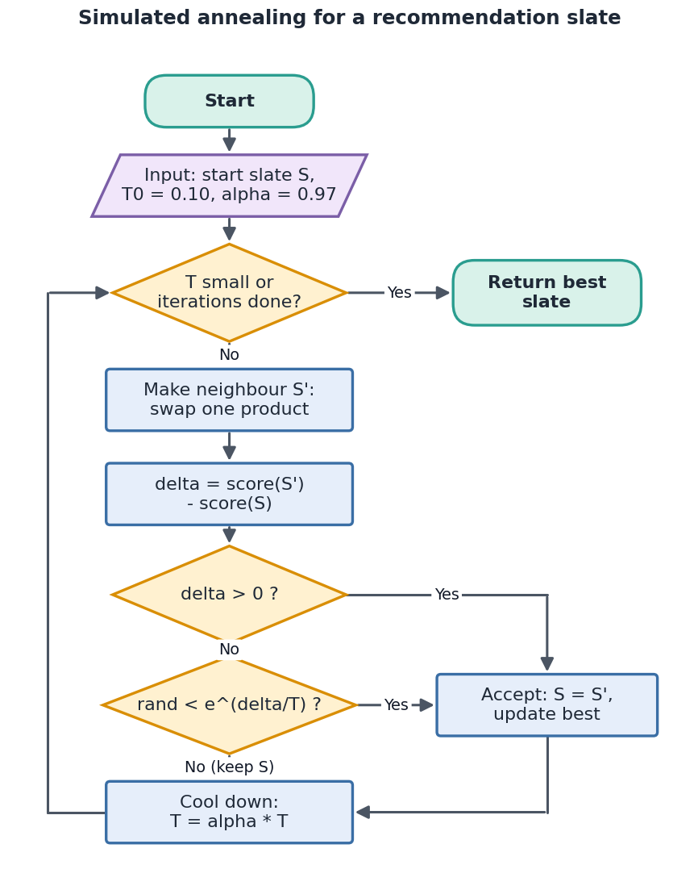
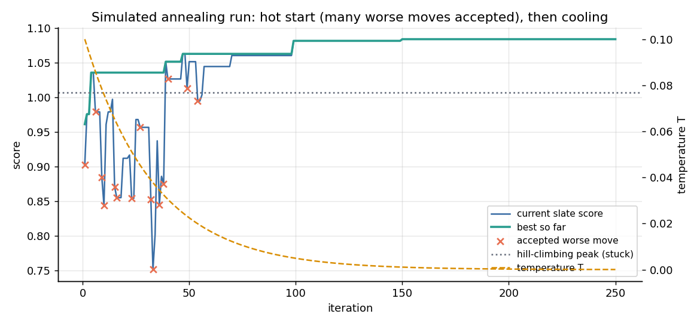
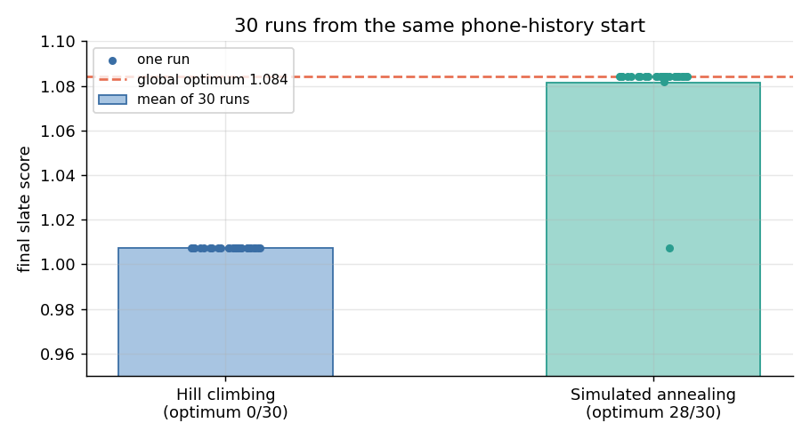
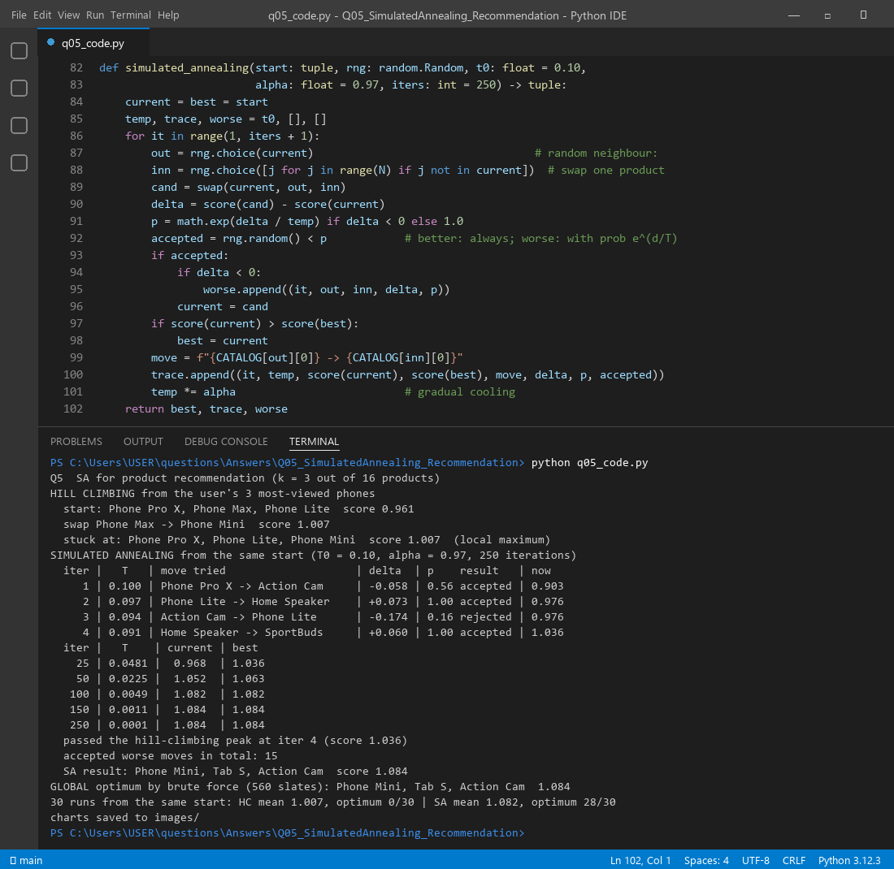

A recommender has to pick a few products, a "slate", from a big catalogue. Trying every slate is too slow, so we search. Plain hill climbing only accepts changes that make the slate better, so it gets stuck on the first good-looking slate. Simulated annealing behaves like a curious shopper: early on (when it is "hot") it sometimes accepts a worse slate just to look around. As it "cools down" it becomes picky and settles on the best slate it found.
Non-heuristic (uninformed, blind) search uses only the problem definition: start, actions and goal test. It has no idea which direction is "warmer". Heuristic (informed) search also uses a function h(n) or a score that estimates how good or how close a state is, so it can try promising states first.
| Type | Algorithm | What guides it | Complete? | Optimal? | Memory |
|---|---|---|---|---|---|
| Non-heuristic | Breadth-first (BFS) | FIFO queue, level by level | Yes | Yes, if step costs are equal | High, O(bd) |
| Depth-first (DFS) | LIFO stack, deepest first | No | No | Low, O(bm) | |
| Uniform cost (UCS) | Lowest path cost g(n) | Yes (step cost > 0) | Yes | High | |
| Iterative deepening | DFS with a growing depth limit | Yes | Yes, for unit costs | Low | |
| Heuristic | Greedy best-first | Lowest h(n) only | No | No | High |
| A* | f(n) = g(n) + h(n) | Yes | Yes, if h is admissible | High | |
| Hill climbing | Best neighbour only | No (local maxima) | No | Very low (1 state) | |
| Simulated annealing | Score + random worse moves, cooling T | Yes, in the limit of slow cooling | Probabilistically | Very low (1 state) |
For recommendations the "path" does not matter; only the final slate does. That makes local search (hill climbing, SA) a natural fit: it keeps one slate in memory and keeps improving it.
| SA term | Meaning here |
|---|---|
| State | A slate of 3 products for this user |
| Neighbour | Swap one product in the slate for one outside it |
| Score (energy) | score = mean relevance + 0.2 × mean novelty + 0.25 variety bonus |
| Relevance | 0.7 × cosine(user, product) + 0.3 if the product is a phone (browsing history) |
| Novelty | 1 − popularity (less famous items feel fresher) |
| Variety bonus | +0.25 only when all 3 products come from different categories |
| Temperature T | How willing we are to try a worse slate. Starts at T0 = 0.10 |
| Acceptance | Better slate: always. Worse slate: with probability p = eΔ/T |
| Cooling | T ← 0.97 × T after every step, for 250 steps |

function SA_Recommend(start_slate, T0 = 0.10, alpha = 0.97, iters = 250):
current ← start_slate; best ← current; T ← T0
for it = 1 to iters:
out ← random product in current
inn ← random product not in current
candidate ← current with out replaced by inn # neighbour
delta ← score(candidate) − score(current)
if delta > 0 or random() < e^(delta / T): # worse moves allowed while hot
current ← candidate
if score(current) > score(best): best ← current
T ← alpha × T # gradual cooling
return best
The start slate is Phone Pro X, Phone Max, Phone Lite with score 0.961. Hill climbing makes one good swap (Phone Max → Phone Mini, score 1.007) and then stops. Every single swap from there is worse. Taking out one phone loses a lot of relevance, and with only two categories there is no variety bonus yet. This is a local maximum: a "same-category" bubble.
| Iter | T | Move tried | Δ | p | Result | Score now |
|---|---|---|---|---|---|---|
| 1 | 0.100 | Phone Pro X → Action Cam | −0.058 | 0.56 | accepted (worse!) | 0.903 |
| 2 | 0.097 | Phone Lite → Home Speaker | +0.073 | 1.00 | accepted | 0.976 |
| 3 | 0.094 | Action Cam → Phone Lite | −0.174 | 0.16 | rejected | 0.976 |
| 4 | 0.091 | Home Speaker → SportBuds | +0.060 | 1.00 | accepted | 1.036 |
At iteration 1 SA accepts a worse slate (Δ = −0.058, p = e−0.058/0.10 ≈ 0.56). That single "step down" lets it reach three different categories at iteration 2 and earn the variety bonus. By iteration 4 it is at 1.036, already above the hill-climbing peak of 1.007. A very bad move at iteration 3 (Δ = −0.174) had only a 16% chance and was rejected.
| Slate | Mean relevance | 0.2 × novelty | Variety | Score |
|---|---|---|---|---|
| Start: Pro X, Max, Lite | 0.938 | 0.023 | 0 | 0.961 |
| Hill-climbing peak: Pro X, Lite, Mini | 0.964 | 0.043 | 0 | 1.007 |
| SA result: Phone Mini, Tab S, Action Cam | 0.734 | 0.100 | 0.25 | 1.084 |
As T fell (0.048 at iteration 25, 0.005 at 100, 0.0001 at 250), SA accepted fewer bad moves (15 in total, almost all early). It ended on Phone Mini, Tab S, Action Cam = 1.084. A brute-force check of all 560 slates confirms this is the global optimum. The slate is still relevant (one phone the user likes) but also fresh and varied.


q05_code.py scores the slates, runs hill climbing, runs SA, checks the global optimum by brute force, and
repeats SA 30 times for the comparison chart.

Files in this folder: q05_code.py (source), q05_code.ipynb (Colab/Jupyter version, already run),
q05_output.txt (console output), images/ (all figures).